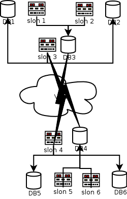

Slony-I uses PostgreSQL DSNs in three contexts to establish access to databases:
ADMIN CONNINFO - controlling how a slonik script accesses the various nodes.
These connections are the ones that go from your “administrative workstation” to all of the nodes in a Slony-I cluster.
It is vital that you have connections from the central location where you run slonik to each and every node in the network. These connections are only used briefly, to submit the few SQL requests required to control the administration of the cluster.
Since these communications paths are only used briefly, it may be quite reasonable to “hack together” temporary connections using SSH tunnelling.
The slon DSN parameter.
The DSN parameter passed to each slon indicates what network path should be used to get from the slon process to the database that it manages.
STORE PATH - controlling how slon daemons communicate with remote nodes. These paths are stored in sl_path.
You forcibly need to have a path between each subscriber node and its provider; other paths are optional, and will not be used unless a listen path in sl_listen. is needed that uses that particular path.
The distinctions and possible complexities of paths are not normally an issue for people with simple networks where all the hosts can see one another via a comparatively “global” set of network addresses. In contrast, it matters rather a lot for those with complex firewall configurations, nodes at multiple locations, and the issue where nodes may not be able to all talk to one another via a uniform set of network addresses.
Consider the attached diagram, which describes a set of six nodes 
DB1 and DB2 are databases residing in a secure “database layer,” firewalled against outside access except from specifically controlled locations.
Let's suppose that DB1 is the origin node for the replication system.
DB3 resides in a “DMZ” at the same site; it is intended to be used as a Slony-I “provider” for remote locations.
DB4 is a counterpart to DB3 in a “DMZ” at a secondary/failover site. Its job, in the present configuration, is to “feed” servers in the secure database layers at the secondary site.
DB5 and and DB6 are counterparts to DB1 and DB2, but are, at present, configured as subscribers.
Supposing disaster were to strike at the “primary” site, the secondary site would be well-equipped to take over servicing the applications that use this data.
Managers paying bills are likely to be reluctant to let the machines at the secondary site merely be “backups;” they would doubtless prefer for them to be useful, and that can certainly be the case. If the primary site is being used for “transactional activities,” the replicas at the secondary site may be used for running time-oriented reports that do not require up-to-the second data.
The symmetry of the configuration means that if you had two transactional applications needing protection from failure, it would be straightforward to have additional replication sets so that each site is normally “primary” for one application, and where destruction of one site could be addressed by consolidating services at the remaining site.
There is also room for discussion of SSH tunnelling here...